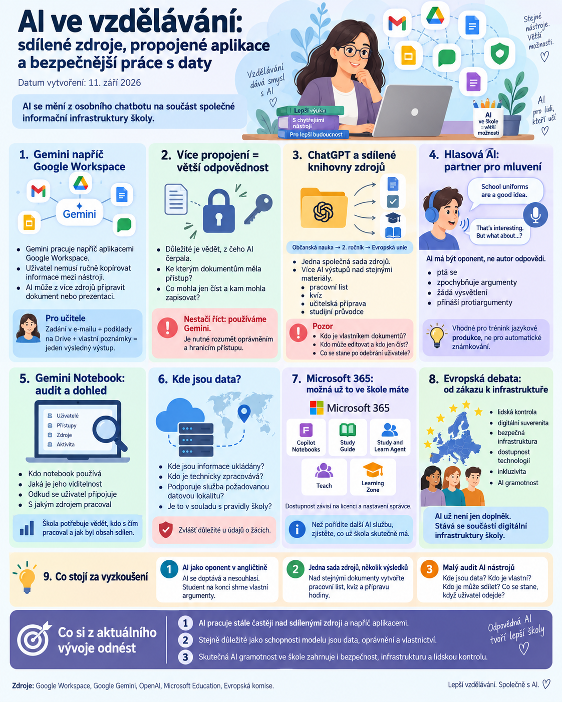

{kind=link}

Umělá inteligence se ve školství posouvá do další fáze. Už nejde jen o to, že jednotlivý učitel otevře chatbot a zadá mu prompt. AI se postupně propojuje s dokumenty, e-mailem, úložišti, poznámkami a dalšími pracovními nástroji.
To mění samotný způsob, jakým o AI ve škole přemýšlíme.
Dříve šlo hlavně o otázku:
Co umí AI odpovědět?
Dnes je stále důležitější:
K jakým datům má AI přístup, komu tato data patří a co s nimi smí dělat?
Právě tento posun je nejvýraznějším tématem aktuálních novinek od Googlu, OpenAI a Microsoftu.
Gemini začíná pracovat napříč Google Workspace
Google rozšiřuje Gemini tak, aby nemuselo pracovat pouze uvnitř jedné konkrétní aplikace.
AI může využívat informace napříč prostředím Google Workspace, například:
- Gmail,
- Google Drive,
- Docs,
- Slides,
- Google Chat,
- další propojené služby.
Praktický význam je jednoduchý: uživatel nemusí ručně kopírovat informace z jedné aplikace do druhé.
Workflow může například vypadat takto:
AI může podle dostupných oprávnění pracovat s více zdroji současně a vytvořit z nich výsledný pracovní výstup.
Proč je to zajímavé pro učitele
Ve škole často pracujeme s informacemi rozdělenými mezi několik míst.
Například:
- zadání přijde e-mailem,
- podklady jsou na cloudu,
- vlastní poznámky v dokumentu,
- výsledný materiál má vzniknout jako prezentace.
Doposud bylo potřeba podklady ručně přesouvat mezi aplikacemi.
Novější agentní způsob práce směřuje k tomu, že člověk určí cíl a AI sama využije potřebné zdroje.
To může výrazně zjednodušit přípravu materiálů, administrativu i týmovou spolupráci.
Více propojení znamená větší odpovědnost
Výhoda je zároveň rizikem.
Čím více aplikací a dokumentů AI vidí, tím důležitější je vědět:
- z jakých zdrojů čerpala,
- ke kterým dokumentům měla přístup,
- co mohla pouze číst,
- kam mohla zapisovat,
- které informace použila ve výsledku.
Pro školu tedy nestačí říct „používáme Gemini“.
Je potřeba rozumět také oprávněním a hranicím přístupu.
ChatGPT umožňuje sdílet celé knihovny materiálů
OpenAI rozšiřuje práci se soubory a složkami v ChatGPT.
Uživatelé mohou sdílet nejen jednotlivé dokumenty, ale také celé složky z knihovny.
Příjemci mohou podle nastavených oprávnění získat roli například:
- Viewer,
- Editor.
Sdílené materiály pak lze přímo používat při práci s ChatGPT.
Pro školství je to zajímavý princip: několik lidí může pracovat nad stejnou řízenou sadou zdrojů.
Jedna sada zdrojů, více AI výstupů
Učitel může například vytvořit složku:
a vložit do ní:
- studijní texty,
- prezentace,
- pracovní materiály,
- odkazy,
- metodické podklady.
Nad stejnou knihovnou lze následně vytvářet různé výstupy:
Místo opakovaného nahrávání stejných dokumentů vzniká jedna společně spravovaná znalostní základna.
To může být zajímavé nejen pro školu, ale také pro projekty typu Janinka Studio.
Pozor na vlastnictví dokumentů
Sdílení knihoven ale přináší otázku, která ve školním prostředí nesmí zůstat bez odpovědi:
Komu soubor skutečně patří?
Pokud uživatel vloží dokument do sdílené složky vlastněné jiným člověkem, mohou se změnit pravidla vlastnictví a dalšího přístupu.
Před vytvořením společné AI knihovny by proto mělo být jasno:
- kdo je vlastníkem,
- kdo může editovat,
- kdo může pouze číst,
- co se stane po odebrání uživatele,
- kdo odpovídá za archivaci.
Ve škole je to důležité hlavně u dlouhodobě používaných materiálů a dokumentů vznikajících v týmu.
Hlasová AI se posouvá k hlubšímu dialogu
ChatGPT zároveň rozšiřuje možnosti hlasového režimu.
Hlasový asistent může při složitějších otázkách využít výkonnější modely a hlubší uvažování.
Pro výuku jazyků je zajímavé především využití AI jako konverzačního oponenta.
Například student dostane tvrzení:
School uniforms are a good idea.
Jeho úkolem je názor několik minut obhajovat.
AI nesmí odpověď opravit ani vytvořit argumentaci za něj. Má pouze:
- klást doplňující otázky,
- zpochybňovat argumenty,
- žádat vysvětlení,
- přinášet protiargumenty.
Student tak musí jazyk skutečně používat, nikoliv pouze přijímat hotové odpovědi.
AI jako partner pro mluvení, ne automatický hodnotitel
Hlasová AI může být výborný partner pro jazykovou produkci.
Neměla by ale automaticky nahrazovat učitele při hodnocení.
Model může:
- přehlédnout chybu,
- opravit něco, co chyba není,
- tolerovat nepřesnost,
- hodnotit nekonzistentně.
Proto je vhodnější použít ji jako partnera pro trénink než jako autoritu, která přiděluje známku.
Gemini Notebook získává lepší auditní možnosti
Google zároveň rozšiřuje administrátorské možnosti Gemini Notebooku.
Organizace mohou získávat podrobnější informace například o tom:
- kdo notebook používá,
- jaká je jeho viditelnost,
- odkud se uživatel připojuje,
- s jakým zdrojem pracoval.
Pro školy je to důležitý krok.
Pokud se AI notebook stane součástí pravidelného školního workflow, je potřeba mít možnost zpětně zjistit, kdo s čím pracoval a jak byl obsah sdílen.
Kde jsou data?
Při používání AI notebooků je potřeba sledovat ještě jednu důležitou věc: umístění a způsob ukládání dat.
Ne každá cloudová AI služba podporuje regionální uložení dat stejným způsobem jako běžné školní systémy.
Před vložením citlivějších dokumentů proto nestačí pouze zkontrolovat funkce.
Je vhodné zjistit také:
- kde jsou informace ukládány,
- kdo je technicky zpracovává,
- zda služba podporuje požadovanou datovou lokalitu,
- zda je používání v souladu s pravidly školy.
To je obzvlášť důležité u údajů o žácích.
Microsoft 365: často máme více možností, než skutečně používáme
U Microsoftu je stále zajímavý především rozvoj vzdělávacích funkcí v Microsoft 365 Copilot.
Školy mohou mít k dispozici například:
- Copilot Notebooks,
- Study Guide,
- Study and Learn Agent,
- Teach,
- Learning Zone.
Dostupnost ale závisí na konkrétní licenci a nastavení správce.
Ve školách tak může nastat zvláštní situace: nástroj už je součástí licence, ale učitelé jej nepoužívají, protože o něm nevědí nebo jej správce zatím nepovolil.
Před pořizováním další AI služby proto dává smysl nejprve zjistit:
Co už naše škola vlastně má?
Někdy je nejlepší AI nástroj ten, který už několik měsíců tiše sedí v licenci.
Evropská debata se posouvá od zákazu k infrastruktuře
Evropská debata o AI ve vzdělávání se také mění.
Už se nesoustředí pouze na otázku, zda mají studenti používat ChatGPT.
Stále více se řeší, jak má vypadat vzdělávací systém v době, kdy je AI běžnou součástí práce a učení.
Důraz se přesouvá například k tématům:
- lidská kontrola,
- digitální suverenita,
- bezpečná infrastruktura,
- dostupnost technologií,
- inkluzivita,
- AI gramotnost.
To je významný posun.
AI už není doplněk, který lze jednoduše zakázat nebo ignorovat. Postupně se stává součástí digitální infrastruktury školy.
Co stojí za vyzkoušení v hodině
1. AI jako oponent v angličtině
Student dostane jednoduché stanovisko a musí jej několik minut obhajovat.
AI dostane instrukci:
- nepomáhej mi s argumenty,
- pouze se doptávej,
- nesouhlas,
- žádej vysvětlení,
- požaduj konkrétní příklady.
Na konci student bez AI sepíše tři nejsilnější argumenty.
Tím se AI používá k jazykové produkci a argumentaci, nikoliv k tvorbě hotového textu.
2. Jedna sada zdrojů, několik výsledků
Pro učitele nebo tvůrce vzdělávacích materiálů lze vytvořit malou testovací knihovnu obsahující například pět dokumentů.
Následně zkusit nad stejnými zdroji vytvořit:
- pracovní list,
- kvíz,
- přípravu hodiny.
Cílem je zjistit, zda model jedné spravované znalostní základny a více výstupů skutečně šetří práci.
3. Udělejte si malý audit AI nástrojů
U každé používané AI služby si položte čtyři otázky:
Kde jsou data?
Kdo je vlastní?
Kdo je může sdílet?
Co se s nimi stane, když uživatel odejde?
To může být překvapivě užitečnější než další školení o psaní promptů.
Co si z aktuálního vývoje odnést
Největší změnou současné AI není nový model.
Je to vznik sdíleného pracovního kontextu.
Gemini pracuje napříč aplikacemi.
ChatGPT umožňuje sdílet celé knihovny zdrojů.
Gemini Notebook získává auditní nástroje.
Microsoft propojuje AI s existujícími školními aplikacemi.
AI se tím postupně mění z osobního pomocníka na součást společné informační infrastruktury organizace.
A v tom okamžiku už nestačí ptát se:
Jak dobře AI odpovídá?
Stejně důležité jsou otázky:
Ke kterým datům má přístup?
Kdo tato data vlastní?
Komu je může zpřístupnit?
A co všechno jí dovolíme udělat?
Právě toto bude stále důležitější část skutečné AI gramotnosti ve škole.
Zdroje: Google Workspace, Google Gemini, OpenAI, Microsoft Education, Evropská komise.